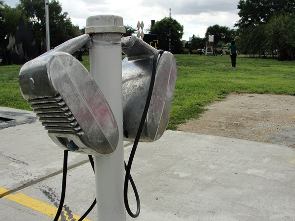
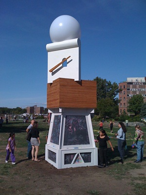
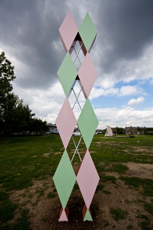

-
Spontaneous Charm: The 2010 EAF at Socrates
by Alice Gregory September 28, 2010
In its tenth year, the Emerging Art Fellowship Exhibition at Socrates Sculpture Park is now on view until March 6th. The artists are self-defined as emerging; some are just out of school while others have more established New York careers. Each one receives a $5,000 grant, along with access to the outdoor studio for the entirety of the exhibition (“Facilitating, not fabrication” is the program’s mission, according to Executive Director Alyson Baker). The fellowship is unique in that it encourages interaction with the neighborhood residents and visitors, who inevitably ask questions of the artists as they’re working throughout the summer. The transparency of the process prevents an immaculately conceived final product, which is often a problem with public art.
There was particular variety this year, and many sculptures lend themselves to short abstracts: Jess Perlitz’s Everything Fought For is a viewing tower that overlooks the Manhattan skyline, pumping water from the East River directly onto itself; Lior Shvil’s once upon a time is the skeleton of a scaled-down drive-in theater, complete with PA system, flood lighting, and a chain link fence; Frank Haines’s Untitled, a gridded cube, balances on one corner, as if Tony Rosenthal’s Alamo had a run-in with Sol LeWitt; Jonathan Duram Crash and Burrow is fabricated to look like a small plane crash, and it was – until a few weeks ago – the home to some pet rabbits; Dan Steinhilber’s Cast Angels, of various dimensions, made from cement, and scattered across a lawn, looks like the abandoned paper-mâché project of a giant but also, oddly, like melting patches of snow.
Trenton Duerksen, Armchair Palimpsest, 2010. Via the Artist
The sculptures, which will all endure the elements in upcoming months, were constructed with environmental factors in mind. The park itself was an abandoned riverside landfill and illegal dumpsite until 1986, when a collection of artists and community members, lead by Mark di Suvero, transformed it into an open studio and exhibition space. The soil the park is built on is not exactly loose. Old debris – concrete slabs, large rocks, unidentifiable detritus – often impedes deep, structural foundations.
But like the inevitable snowfall (as well as the recent tornado), the less-than-uniform ground presents the artists with a problem to solve. Jory Rabinovitz, one of the artists in the show, seems to have reckoned with – and accepted – the working conditions. Optimistically, he says, these were all “restrictions that led to clarification.” His own piece, Sponge Piece for Socrates, a 32-foot tall metal dowel, “shish kabobed” with rainbow sponges, sways in even the lightest breeze. From a distance, the matte sponges look like colored concrete, but up close their webbiness is more reminiscent of the sugar crystals Japanese kids grow from kits. There’s something perverse about such a playful piece always threatening to impale somebody.
Close by, Trenton Duerksen’s Armchair Palimpsest squats like a sturdy lighthouse. A tapered, white base frames four walls of blackboard (chalk included); atop this is a wooden block on which an abstract, cartoonish form emerges into the sky, like the cross section of a La-Z-Boy arm, complete with lever. Buoyed on it all is a huge, white beach ball that, due to light reflecting off a nearby condominium complex, appears lavender against the pale sky. It bobs around like the head of a doll with a broken neck. It’s as though Duerksen has pillaged Pee Wee’s Playhouse and translated the furniture for the purposes of high design. “It’s a really elaborate pedestal is all it is,” he says, with goofy self-deprecation. Whatever it is, I want it.
Daniele Frazier’s Argyle, a four-diamond totem, seems constructed with equal parts whimsy and art-historical awareness. The alternating frontal panels, in Lily Pulitzer pink and green, contrast against the sides, which are painted in the rusty tone of steel primer. The juxtaposition of colors reiterates the structural dissonance of the work itself; it’s quite impish of Frazier to build a monumental sculpture of a decorative motif, especially in Mark di Suvero’s park. Di Suvero is an artist, who, like Barnett Newman and Constanin Brancusi, is almost definitively non-decorative, working frequently in monochrome. The piece is attractive enough, though, that it doesn’t require such unpacking; most people seem happy just to stare. “Oh, I have socks like that” has been the response of many a local dog walker.
Nearby, Gavin Anderson’s Coastal Hermitage, a cabin he built upstate from trees milled to match the contour of the hill it’s situated on, is shingled with hundreds of shoe insoles and scraps of plastic cut from bottles of laundry detergent. Rumor has it he’s now in possession of a vat full of mixed liquid soap, collected from all those extra half-inches that linger at the bottom. The cabin itself, because of its non-squared structure, appears like a cozy Eames Room – Laura Ingalls Wilder on acid. Apparently, Anderson plans to motorize the cabin and drive it back upstate when the show comes down next spring.
In a curatorial decision made to anchor the show as a whole, the other, more classically architectural piece stands at the opposite end of the park. As Alyson Baker explained, laughing, this was done to avoid a sort of clustering that might appear “more like a shanty town than a sculpture park.” Scott Anderson, a bartender at Fort Defiance in Red Hook, as well as a sculptor, drew up plans to construct a bar for which he would get a temporary liquor license and serve alcohol. In early July, however, a serious biking accident led to a shattered pelvis and vertebrae. He’s been convalescing (miraculously well, we hear!) since then. His parents flew in from Seattle and built the bar themselves, integrating seamlessly into the community of young artists.
Since the EAF is non-thematic, unlike Socrates’ springtime exhibitions, there’s a charming chaos to the exhibition as whole. Particularly colorful this year, the park looks, from a distance, like a spontaneous outsider art project or like an amalgam of vernacular architecture. Regardless, it’s the best view of the Manhattan skyline you’re going to get. Go before the weather turns, and pack a roast pork sandwich from Steve Chu’s.